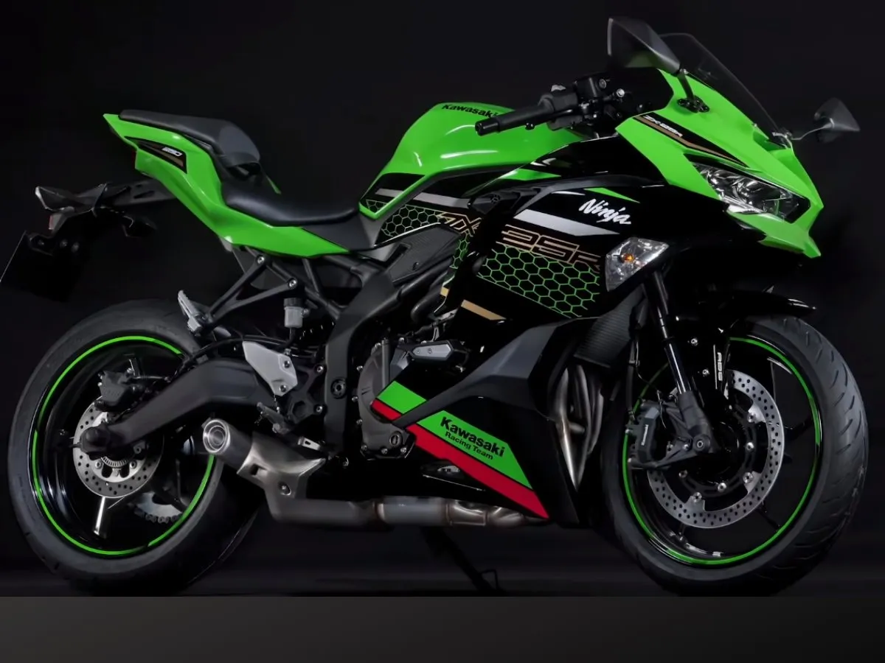

Kawasaki Ninja ZX-4R
Továrna Kawasaki hrdě představuje revoluční novinku v kategorii sportovních motocyklů o objemu 400 ccm. Jedná se o ostrý nízkoobjemový supersport Ninja ZX-4R!
Tento motocykl pohání vysokootáčkový řadový čtyřválcový řadový motor DOHC o objemu 399 ccm plněný náporovým sáním RAM-AIR. Motor s nejvyšším výkonem ve své třídě je uložen v plnohodnotném, kompaktním příhradovém rámu. Ninja ZX-4R Performance má oproti základnímu modelu navíc toto příslušenství: Sportovní kouřové plexisklo, originální gelový tank pad, ochrannou fólii na přístrojovém TFT panelu, stylový kryt sedadla spolujezdce, oboustranný quickshifter a to vše je okořeněné sportovním karbonovým výfukem Akrapovič.
205 900,-